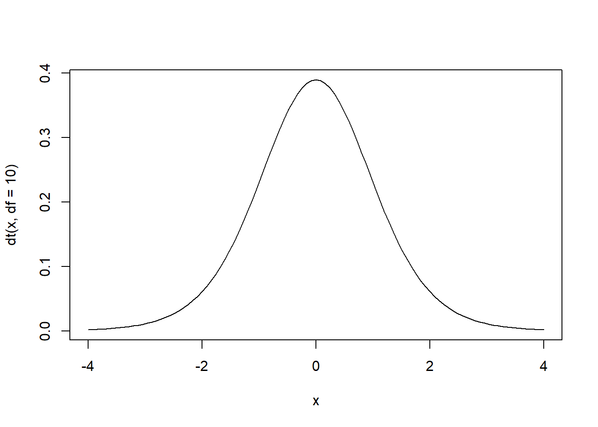
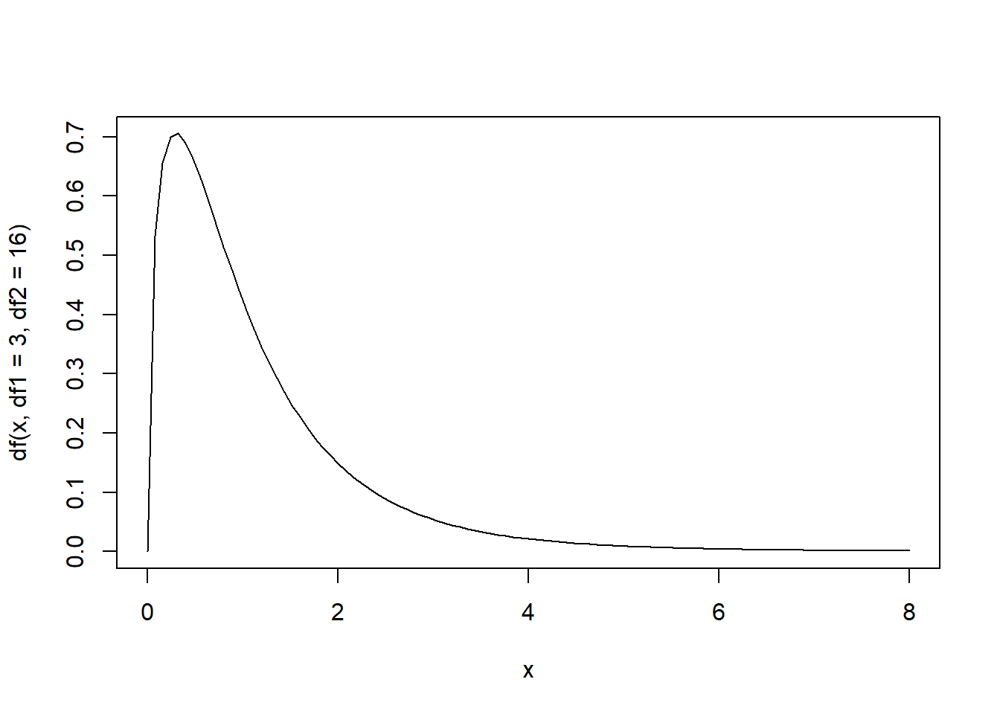
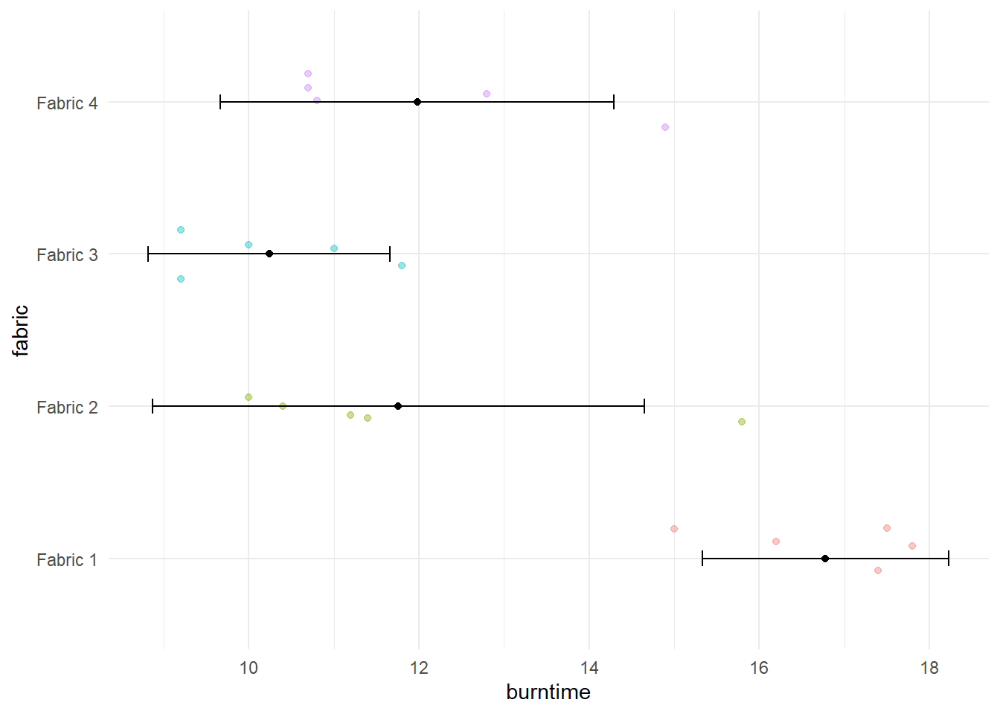
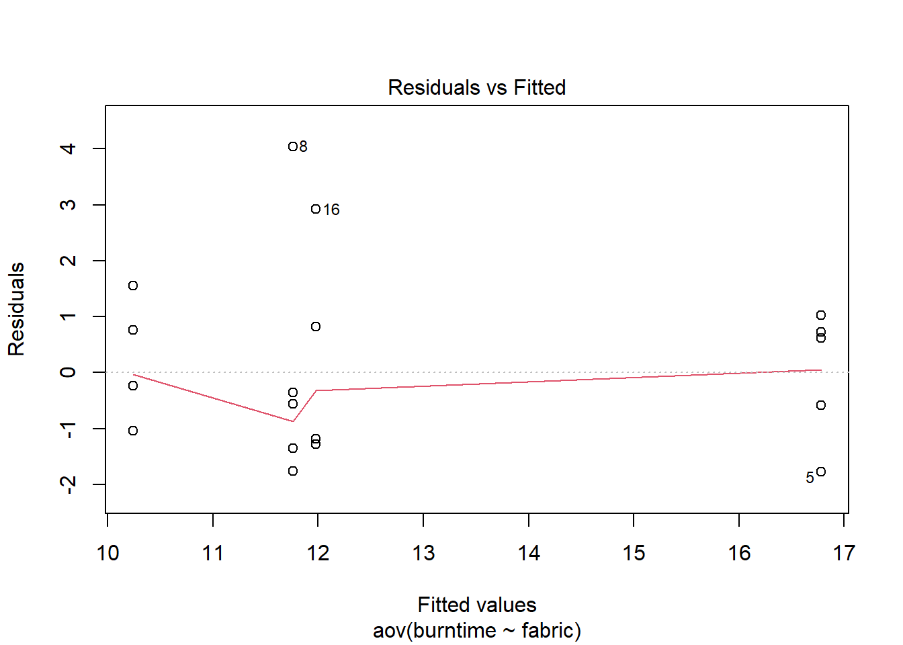
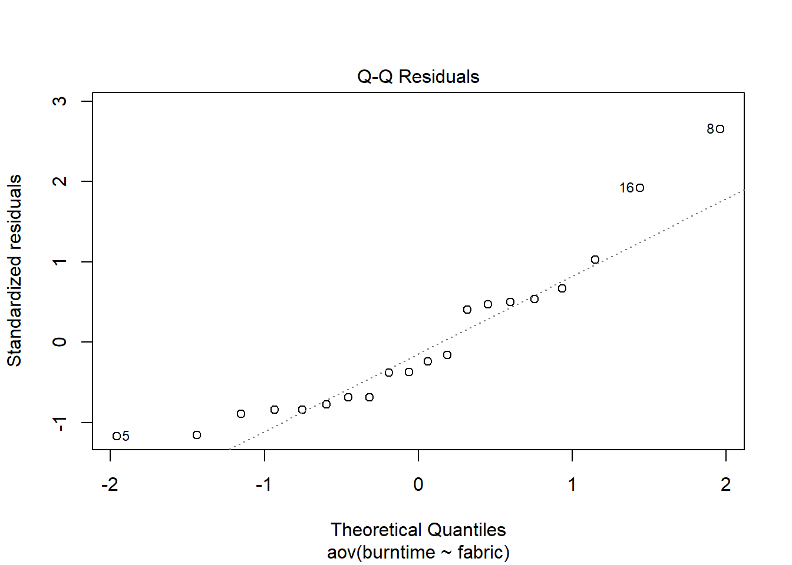
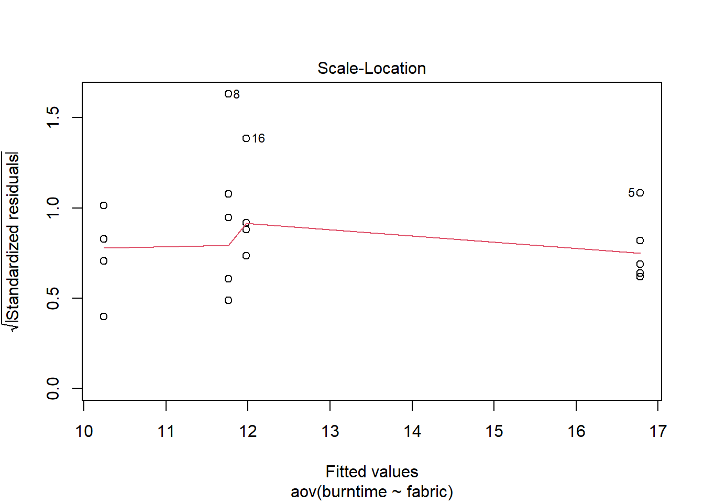
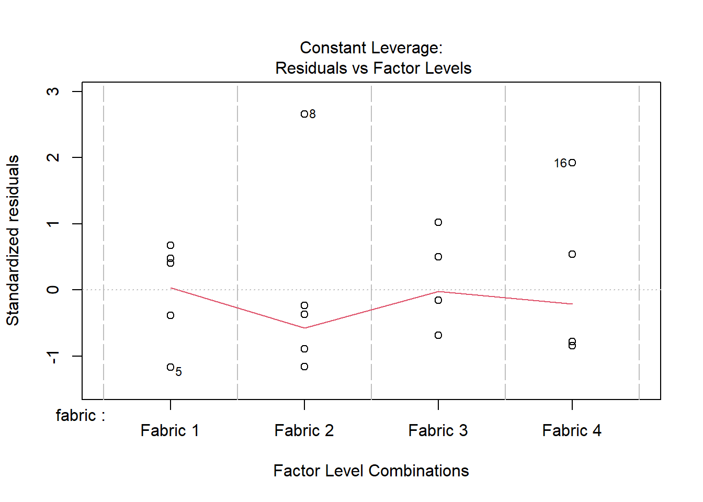

Chapter 8: Analysis of Variance (ANOVA) and Analysis of Covariance (ANCOVA)
Learning Objectives
Define and understand an ANOVA
Use a one-way ANOVA on example data
Understand and calculate an ANOVA table
Describe Tukey’s post hoc tests and assumptions of ANOVAs
Understand the difference between one-way and two-way ANOVAs
ANOVA
Analysis of variance, or ANOVA, is an approach to comparing data with multiple means across different groups, and allows us to see patterns and trends within complex and varied data.
Used for categorical or grouped data.
Often data from experiments (treatments make good factors).
EDA bar, points, or box plots are options to show differences between groups.
One-way ANOVA
fabric burn-time data
fabric 1
fabric 2
fabric 3
fabric 4
17.8
11.2
11.8
14.9
16.2
11.4
11
10.8
17.5
15.8
10
12.8
17.4
10
9.2
10.7
15
10.4
9.2
10.7
Can we regard the mean burn times of the four fabrics as equal?
fabric 1 seems to take longer time to burn
One-way (single factor) ANOVA model
Start with hypotheses and EDA to visualize groups
\(H_0\): The mean burn times are equal for the four fabrics
\(H_a\): The mean burn time of at least one fabric is different.
Df Sum Sq Mean Sq F value Pr(>F)
fabric 3 120.50 40.17 13.89 0.000102 ***
Residuals 16 46.26 2.89
---
Signif. codes: 0 '***' 0.001 '**' 0.01 '*' 0.05 '.' 0.1 ' ' 1
fabric effect on burntime is highly significant.
In other words, the null hypothesis of equal mean burntime is rejected.
Or alternatively the mean burntime is different for at least one fabric
ANOVA table
How are these values calculated?
Df Sum Sq Mean Sq F value Pr(>F)
fabric 3 120.50 40.17 13.89 0.000102 ***
Residuals 16 46.26 2.89
---
Signif. codes: 0 '***' 0.001 '**' 0.01 '*' 0.05 '.' 0.1 ' ' 1
SS
df
MeanSq
FACTOR
k-1
FACTOR SS/(k-1)
ERROR
n-k
ERROR SS/(n-k)
TOTAL
n-1
TOTAL SS/(n-1)
ANOVA table
Calculating F values of a factor:
\(F = \frac{MS_{Factor}}{MS_{Error}}\)
SS
df
MeanSq
FACTOR
k-1
FACTOR SS/(k-1)
ERROR
n-k
ERROR SS/(n-k)
TOTAL
n-1
TOTAL SS/(n-1)
ANOVA table practice
SS
df
MeanSq
F- value
P-value
FACTOR
k-1
FACTOR SS/(k-1)
MSF/MSE
ERROR
n-k
ERROR SS/(n-k)
TOTAL
n-1
TOTAL SS/(n-1)
SS
df
MeanSq
F- value
P-value
fabric
120.5
Residuals
46.3
TOTAL
Reminder on P values
In null-hypothesis significance testing, the p-value is the probability of obtaining test results at least as extreme as the result actually observed, under the assumption that the null hypothesis is correct.
A very small p-value means that such an extreme observed outcome would be very unlikely under the null hypothesis.
We calculate them based on our theoretical sampling distributions (normal, \(t\), \(F\), \(\chi^2\))
Reminder of Sampling Distributions
A sampling distribution is a probabilistic model of sampling variation–it describes the behaviour of some sample statistic
For a normal population, when the population parameters and are known, we can easily derive the sampling distributions of the sample mean or sample variance.
When the population parameters are unknown, we have to estimate them from data.
Reminder of Sampling Distributions


Reminder of Sampling Distributions
Graphical comparison of means
The graph below shows individual 95% confidence intervals for the fabric means
Pooled SD (\(\sqrt{MSE}\)) is NOT used

One-way ANOVA model Assumptions
Residuals are randomly and normally distributed
Residuals must be independent of means.
If SD increases with mean, try square root or logarithmic transformation.
The ANOVA model assumes equal SD for the treatments.
If experimental errors are more in some subgroups, divide the problem into separate ones.
Positive correlation among residuals leads to under estimation of error variance; negative correlation leads to overestimation.
These assumptions are harder to validate to small experimental design data
Visualize assumptions
plot(aov(burntime ~ fabric, data = fabric))




Visualize assumptions
fabric |>group_by(fabric) |>summarise(mean =mean(burntime),sd =sd(burntime) ) |>ggplot() +aes(x = mean, y = sd, group =factor(1)) +geom_point()
Figure 1: SD vs mean for four fabrics
With only four fabrics in the sample, it is difficult to make any definitive claim.
If the assumptions were valid, we would expect the four points to fall approximately along a horizontal band indicating constant standard deviations, and hence variances, regardless of the means of the groups.
This figure suggests that this is the case, so the assumption of equal variances appears to be valid.
Equal variance
Bartlett’s test: - null hypothesis: equal variances - but it has an assumption of its own (response variable must be normally distributed)
Levene’s test - null hypothesis: equal variances - is applicable for any continuous distribution
bartlett.test(burntime ~ fabric, data = fabric)
Bartlett test of homogeneity of variances
data: burntime by fabric
Bartlett's K-squared = 2.6606, df = 3, p-value = 0.447
car::leveneTest(burntime ~ fabric, data = fabric)
Levene's Test for Homogeneity of Variance (center = median)
Df F value Pr(>F)
group 3 0.1788 0.9092
16
Normality
aov_fabric <-aov(burntime ~ fabric, data = fabric)shapiro.test(aov_fabric$residuals)
Shapiro-Wilk normality test
data: aov_fabric$residuals
W = 0.88926, p-value = 0.02606
ANOVAs are robust to mild issues of non-normality
But if have issues with normality and unequal variance try transformations
A two-way ANOVA is used to estimate how the mean of a continuous variable changes according to the levels of two categorical variables.
Use a two-way ANOVA when you want to know how two independent variables, in combination, affect a dependent variable.
Very similar to multiple regression but with categorical variables.
Two way (two factor) ANOVA example
Example: Twelve tanks, six each with water from one of the two lakes were set up. Three nutrient supplements were added to each tank. The count of zooplankton in a unit volume of water was then noted.
Zooplankton Supplement Lake
34 1 Rose
43 1 Rose
57 1 Dennison
40 1 Dennison
85 2 Rose
68 2 Rose
67 2 Dennison
53 2 Dennison
41 3 Rose
24 3 Rose
42 3 Dennison
52 3 Dennison
Analysis of covariance (ANCOVA) is a statistical method that combines linear regression and analysis of variance (ANOVA) to evaluate the relationship between a response variable and various independent variables while controlling for covariates.
Analysis of Covariance (ANCOVA)
Indicator variables are used as additional regressors along with a quantitative predictor (covariate).
In order to allow for different slopes for each location, we define the product (or interaction) variables \(I_1*X\), and \(I_2*X\) (\(X\) being the covariate, Households)
Location is categorical with levels Mall, Street, and Highway
For \(I_1=0\) & \(I_2=0\), the model becomes the fit for Highway
So this set-up compares Mall/Street with Highway
Significant \(I_1\) coefficient means that Mall location has a constant level of higher sales
Mall location model has a higher intercept but the slopes are the same for all three locations.
Graphing the model
Summary
ANOVA models study categorical predictors (factors).
- Interaction between factors is important.
- ANOVA models and regression models are related and fall under a general family of linear models.
ANCOVA models employs both numerical variables (covariates) and qualitative factors for modelling.
- Interaction between factors and covariates is important.
Linear models
Family tree
T-tests, regressions, ANOVAs, and ANCOVAs are related
Similarities:
- 1 continuous response variable
- Assumptions: normality, equal variance, and independence of residuals
Differences:
- EDA
- test statistics
- number and type of predictors
What’s the difference between a t.test and an ANOVA?
A t-test is used to determine whether or not there is a statistically significant difference between the means of two groups
sample group vs hypothetical population One-sample t-test
two independent samples Two-sample t-test
also called independent t-test because the two samples are considered independent
samples linked in some why, not independent Paired t-test
An ANOVA is used to determine whether or not there is a statistically significant difference between the means of three or more groups, but not which group
one factor split into 3 or more groups (levels) One-way ANOVA
two factors split into 3 or more groups (levels) Two-way ANOVA
more than two factors Three factor ANOVA etc…
What’s the difference between a t.test and an ANOVA?
The main difference between a t-test and an ANOVA is in how the two tests calculate their test statistic to determine if there is a statistically significant difference between groups.
T-test:
T statistic: ratio of the mean difference between two groups relative to overal standard deviation of the differences
\(s =\) sample standard deviation \(d =\) difference
ANOVA:
F statistic: ratio of the variance between the groups relative to the variance within the groups
\(F = \frac{s_b^2}{s_w^2}\) Where \(s_b^2\) is the between sample variance, and \(s_w^2\) is the within sample variance.
MSF/MSE
When to use a t.test or an ANOVA?
In practice, when we want to compare the means of two groups, we use a t-test. When we want to compare the means of three or more groups, we use an ANOVA.
Suppose we have three groups we wish to compare the means between: group A, group B, and group C.
If you did the following t-tests:
A t-test to compare the difference in means between group A and group B
A t-test to compare the difference in means between group A and group C
A t-test to compare the difference in means between group B and group C
What if we just did many t-tests?
For each t-test there is a chance that we will commit a type I error, which is the probability that we reject the null hypothesis when it is actually true. Let’s say we set this to 0.05 (\(\alpha = 0.05\)). This means that when we perform multiple t-tests, this error rate increases.
The probability that we commit a type I error with one t-test is 1 – 0.95 = 0.05.
The probability that we commit a type I error with two t-tests is 1 – (0.95^2) = 0.0975.
The probability that we commit a type I error with three t-tests is 1 – (0.95^3) = 0.1427.
The type I error just increases!
We use a post-hoc (after) test to see which group is driving differences, these pairwise comparisons have a correction factor to adjust our Type I error
What’s the difference between a regression and an ANOVA?
A regression is used to understand the relationship between predictor variable(s) and a response variable
one predictor Simple Regression
two or more predictors Multiple Regression
An ANOVA is used to determine whether or not there is a statistically significant difference between the means of three or more groups, but not which group
one factor split into 3 or more groups (levels) One-way ANOVA
two factors split into 3 or more groups (levels) Two-way ANOVA
more than two factors Three factor ANOVA etc…
Not too much difference there
What’s the difference between a regression and an ANOVA?
Regression:
T statistic: test if each predictor’s estimate is different from 0
\(R^2\): proportion of variance explained \(\frac{SSR}{SST}\)
F statistic: overall F statistic for the regression model, \(\frac{MS_{reg}}{MS_{error}}\) where \(MS = \frac{SS}{df}\)
ANOVA:
F statistic: ratio of the variance between the groups relative to the variance within the groups
\(F = \frac{s_b^2}{s_w^2}\)
where \(s_b^2\) is the between sample variance, and \(s_w^2\) is the within sample variance.
MSF/MSE
The F statistic is the same, thats why you can produce an ANOVA table from your regression
When to use a regression or an ANOVA?
Conventionally, a regression refers to continuous predictors and ANOVAs are used for discrete variables.
BUT …
You can code discrete variable as indicator variables and then treat them as continuous and run a regression!
Generally, if you have 1 continuous and 1 discrete variable you should generate indicator variables and run a multiple regression
If you are using the continuous predictor as a covariate it would be called an ANCOVA.
You can code a discrete variable into continuous but if you do the reverse you lose statistical inference.
Reminder on Hypotheses
T-Test: difference between the means of two groups
Null: \(\mu_{1} - \mu_{2}\) is equal to \(0\) Can be \(=\), \(\le\), or \(\ge\)
Alt: \(\mu_{1} - \mu_{2}\) is not equal to \(0\) Can be \(\ne\), \(<\), or \(>\)
Regressions: understand the relationship between predictor variable(s) and a response variable
Null: true slope coefficient is \(= 0\) (i.e. no relationship)